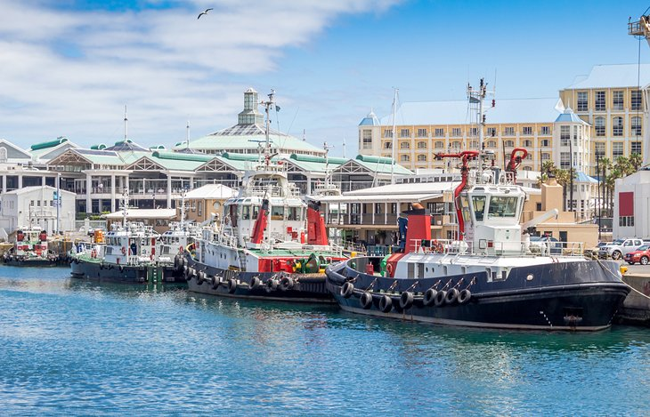
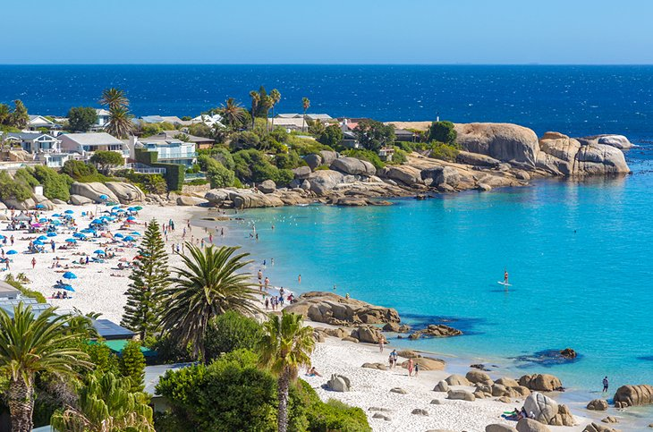

As one of Cape Town’s largest tourist attractions and most visited destinations, the Victoria and Alfred Waterfront invokes images of the earliest days of the harbor. Situated within an entertainment mecca filled with restaurants, specialty shops, pubs, and theaters, there is something here for everyone to enjoy. Beyond amusements, there are also some attractions including the infamous Clock Tower, Chavonnes Battery, the South African Maritime Museum and the coastal Seal Landing where Cape Fur Seals reside.
 Family time is the best time ,with capetown beauty white sand beach